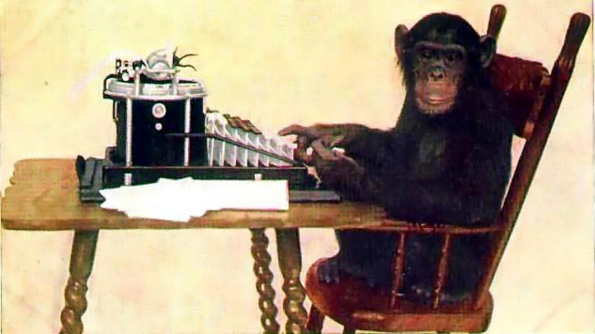

Dogma and the monkey Shakespeare


Break this dogma that you have about this idea, opinion, project, company, country, the continent, or this world because it is more likely that it was built by a better “dogmer” than you who may be was driven only by what mattered to him which can be money if interruption marketing was the job to be done. Of course, permission marketing gives freedom of thought and a new way of seeing things and measuring them and knowing how to measure success because knowing it has a huge impact on our life. How will you measure success troubled a great professor who spends a huge amount of time thinking about this question and sincerely this god believer and fearer came up with a theory that is worth learning and building practical applications on top of it. Dear theories are the most important things in our world and we just ignored them in face of dear actions who der us to take care of theories for them to become better. Dogmas are theories that we won't leave behind in place of other theories that can be better as dogmas. Why not just build your own theories and promulgate the best of them as dogmas and stick with them. It will benefit the world if you have empathy and the world here can be simply people connected to you. So with The revolution of the internet, you can just connect with millions of them just for not saying everybody because the internet penetration rate is quite growing in every country but we are not still at 100%. If the benefit that can be extracted from an internet connection alone is really true, I hope we will reach soon this level and everybody would have the same opportunity to benefit from it because a connected computer is really an effective tool that gives freedom of entrepreneurship to anyone who seeks to search, learn and experiment with business ideas and there are no borderlines that keep people from selling things online and it is a worldwide market.
Go sell something but be a permission marketer who never steals people's attention.
PS: for pinning this book am reading now I ask myself the following question. Am I the monkey Shakespeare with his keyboard?